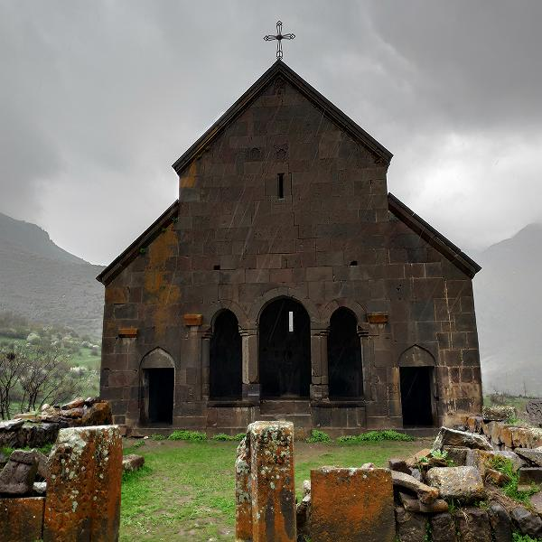
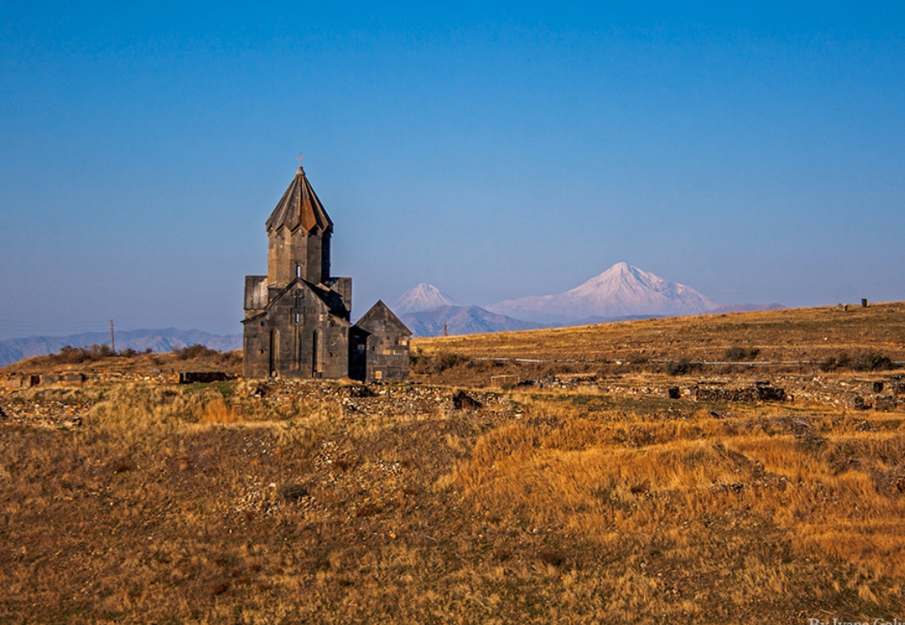
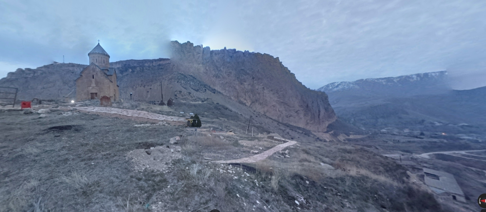
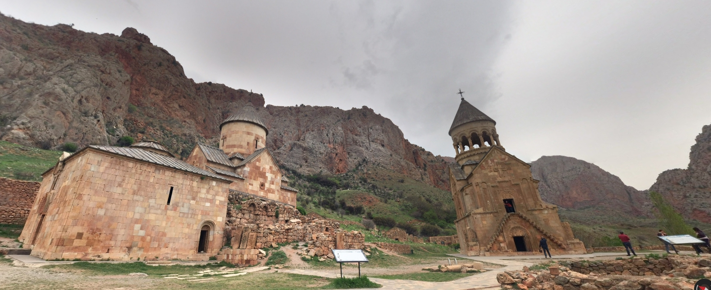
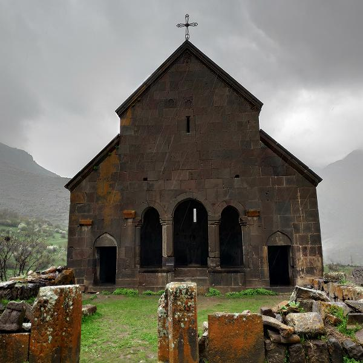
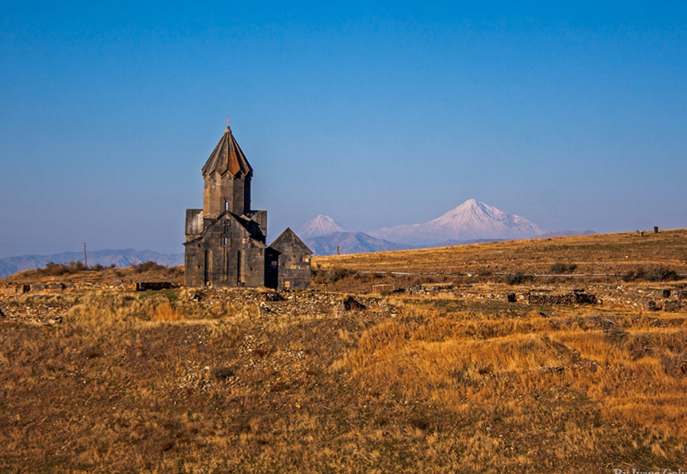
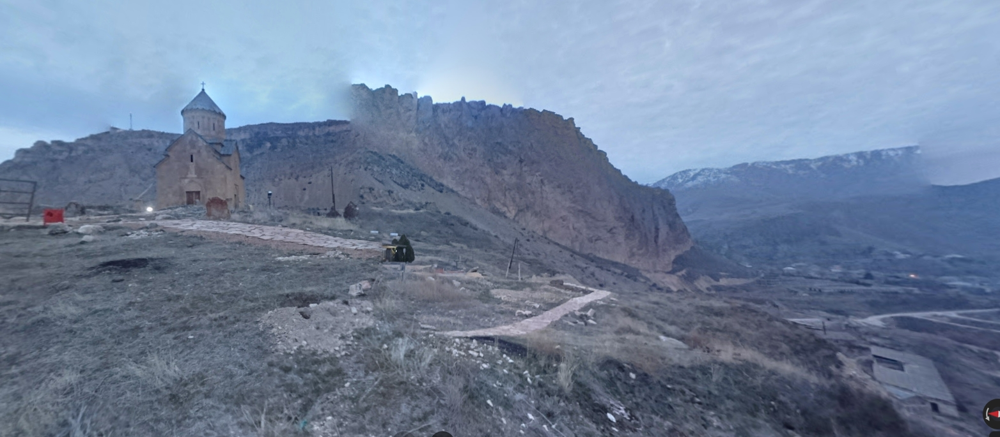
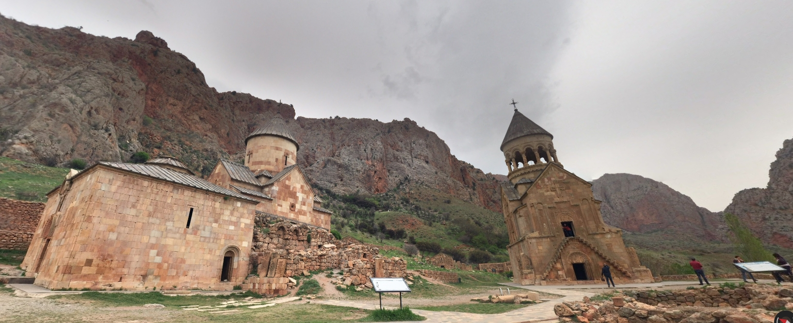

Букинг
40.116817, 44.731683 Гарни новый
Sun-child Cottage
Адрес: House 6, dead end 2, Alekyan Street,, 2215 Гарни,
Армения
Телефон: +374 93 700100
Координаты GPS: N 040° 7.009, E 44° 43.901
39.748100, 45.328050 Greenfield Camping
Greenfield Camping
Адрес: Yerevanyan Highway, 3601 Ехегнадзор, Армения
Телефон: +374 77 778860
Координаты GPS: N 039° 44.886, E 45° 19.683
40.490433, 45.050833 Sevan
Адрес: Tsovazard Beach House, 1210
Tsovazard, Армения
Телефон: +374 95 122775
Координаты GPS: N 040° 29.426, E 45° 3.050
41.078350, 44.614383 LORI CANYON
Адрес: Yerevanyan street 76/50-4, Alaverdi, Lori
Region, 1705 Алаверди, Армения
Телефон: +374 98 695966
Координаты GPS: N 041° 4.701, E 44° 36.863
40.351000, 44.262750 Byurakan Resort
Адрес: Byurakan, Бюракан, Армения
Телефон: +374 93 800005
Координаты GPS: N 040° 21.060, E 44° 15.765
Достопримечательности
Гарни и окрестности
40.12287926330709, 44.76922710802237 Авуц Тар
40.11568506130568, 44.74128414971771 органчик
40.11237345707008, 44.73023271959706 гарни
40.14000550835473, 44.818517740582486 Гегард
40.0913355984473, 44.7865432851754 байбурд
(первая фотка возможно Агжоц...)
40.07716063185428, 44.87445439559967 какаваберд
Непонятно как добраться, дичь
40.10685563548613, 44.807673672735845 Агжоц мрь
39.87854, 44.57623 Хор Вирап ; может, по пути из Гарни монастырь (тут есть сувениры)
Вайоцдзор
39.87514545625838, 45.400829038441884 hermon monastery ; на склоне горы, красивые виды
 39.90488403426382, 45.439674967706615 Аратес монастырь
в маленькой деревне
39.89033010019174, 45.35389886035601 цахац кар ; церковь рядом руины монастыря
39.90488403426382, 45.439674967706615 Аратес монастырь
в маленькой деревне
39.89033010019174, 45.35389886035601 цахац кар ; церковь рядом руины монастыря
 39.8717361,45.3381139 Смбатаберд крепость ;
39.8717361,45.3381139 Смбатаберд крепость ;
 39.87162287779085, 45.3654553559837 Ехегис ; церковь Зорац (Сурб Степанос)

39.90172472050096, 45.33219636055198 хорбатех гейзер ;
Видимо, надо ждать, пока взбрыкнёт...
39.82983403223795, 45.36357687448802 spitakavor ; спитакавор
(а напротив на вершинке ещё есть крепость Прошаберд, там совсем чуть-чуть осталось, но вершинно-пустынно)
39.758808163891146, 45.610782867204456 гндеванк ; монастырь 9 века, резьба по камню, на холме на отшибе от деревни
39.817325422143035, 45.63649283895785 минерал гейзер ; у Джермука, булькает, но без фонтана
39.83651360325035, 45.668428677051715 Джермук вдп
(вокруг курортно-культурно)
39.780231494268364, 45.399357128204166 танаат
кроме церкви много фундаментов вокруг, всё пустынно.

39.72406948212123, 45.18949870089795 Арени
На уступе над городом, вокруг на уступе какие-то то ли фундаменты то ли руины то ли фигня

39.68458758849912, 45.233097702728344 Норванк мрь
Похоже довольно цивильно-посещаемый, хотя и без населёнки вокруг.

39.87162287779085, 45.3654553559837 Ехегис ; церковь Зорац (Сурб Степанос)

39.90172472050096, 45.33219636055198 хорбатех гейзер ;
Видимо, надо ждать, пока взбрыкнёт...
39.82983403223795, 45.36357687448802 spitakavor ; спитакавор
(а напротив на вершинке ещё есть крепость Прошаберд, там совсем чуть-чуть осталось, но вершинно-пустынно)
39.758808163891146, 45.610782867204456 гндеванк ; монастырь 9 века, резьба по камню, на холме на отшибе от деревни
39.817325422143035, 45.63649283895785 минерал гейзер ; у Джермука, булькает, но без фонтана
39.83651360325035, 45.668428677051715 Джермук вдп
(вокруг курортно-культурно)
39.780231494268364, 45.399357128204166 танаат
кроме церкви много фундаментов вокруг, всё пустынно.

39.72406948212123, 45.18949870089795 Арени
На уступе над городом, вокруг на уступе какие-то то ли фундаменты то ли руины то ли фигня

39.68458758849912, 45.233097702728344 Норванк мрь
Похоже довольно цивильно-посещаемый, хотя и без населёнки вокруг.

Ближний север-северо-восток (от Еревана)
40.261431836508095, 44.31948039192131 Ошакан крепость ; как будто со времен Урарту
40.34510642132209, 44.24002785012809 Тегер мрь
Рядом разреженная населенка, вроде не мешает
40.389400873678525, 44.22576573253981 Амберд
крепость и церковь, цивильно, но вокруг пустынно
40.380993, 44.396889 Сагмосаванк монастырь ; XIII век
(можно по дороге с севера в Бюрокан)
40.339651511046775, 44.38852703589937 Ованованк
рядом легкая зеленая населенка, но на краю ущелья весьма пусто и круто
Средний Север
40.50878427795104, 44.43535756861795 церковь Зовуни ; через водохранилище от села Кучак
церковь Сурб Погос–Петрос (петр павел), также известная как церковь Зовуни или Зовунийская церковь[1]) — армянская церковь V века на левом берегу Апаранского водохранилища
может быть под водой
40.45654274545967, 44.58483548849903 Негуц мрь
40.46126938460817, 44.6499504084167 Бжни
городок церкви остатки крепости
40.374168324205286, 45.181032784760866 Норатус ; древнее кладбище, хачкары
Рядом с Севаном
40.43278830662426, 45.10779068636576 Монастырь Айраванк
на Севане
40.5639306615302, 45.01069734098324 Севанаванк
На полуострове оз.Севан, место пафосное и известное, но, наверно, стоит посещения.
Дальний Север
40.99476772822477, 44.43838911553152 амракиц ц св николая
Русский модерн, нач. 20 века. Село Амракиц — бывш. Николаевка, основано украинскими казаками в 19 веке.
41.09369261688217, 44.71174317813855 ахпат монастырь
 40.802105411841005, 44.890182240194456 Агарцин мрь
Цивильный, но в одиноких лесных горах
40.729804071859235, 44.99728496321644 Гошаванк
но окр. среда как-то не очень (разреженная населенка)
41.00508506099194, 44.63494476414267 Кобайр мрь
на лесном склоне, на отшибе от дороги.
41.00220734574936, 44.64534670858667 2кобайр ; вроде как начало дороги к монастырю.
41.05100746802646, 44.616125125134744 Одзун
41.05185164249078, 44.62221417016477 Одзун Tsiranavor ; маленькая на обрыве откуда тропа на нижний Оромайр
41.035176, 44.628138 монастырь Оромайр ; (верхний)
Верхний:
Нижний:
41.15160138105806, 44.76388846876791 мрь Ахтала
фрески XIII века красивые
41.087862, 44.666280 Санаин ; в этой деревне и вокруг монастырь и церкви XII века и радник того же века древнеобделанный
40.802105411841005, 44.890182240194456 Агарцин мрь
Цивильный, но в одиноких лесных горах
40.729804071859235, 44.99728496321644 Гошаванк
но окр. среда как-то не очень (разреженная населенка)
41.00508506099194, 44.63494476414267 Кобайр мрь
на лесном склоне, на отшибе от дороги.
41.00220734574936, 44.64534670858667 2кобайр ; вроде как начало дороги к монастырю.
41.05100746802646, 44.616125125134744 Одзун
41.05185164249078, 44.62221417016477 Одзун Tsiranavor ; маленькая на обрыве откуда тропа на нижний Оромайр
41.035176, 44.628138 монастырь Оромайр ; (верхний)
Верхний:
Нижний:
41.15160138105806, 44.76388846876791 мрь Ахтала
фрески XIII века красивые
41.087862, 44.666280 Санаин ; в этой деревне и вокруг монастырь и церкви XII века и радник того же века древнеобделанный
Окрестности Еревана
40.159984, 44.335874 Руины Звартноца ; уж не знаю, может, в конце - храм VII века
Сервис
40.155000, 44.478408 Ереван Сити ; супермаркет улица Багратуняц, 5/3 (подземный паркинг)
40.154515, 44.499899 Ереван Молл ; есть Carrefour (подземный паркинг)
40.142123, 44.520261 Erebuni mall ; супермаркет (подземный паркинг) ул Эребуни 17